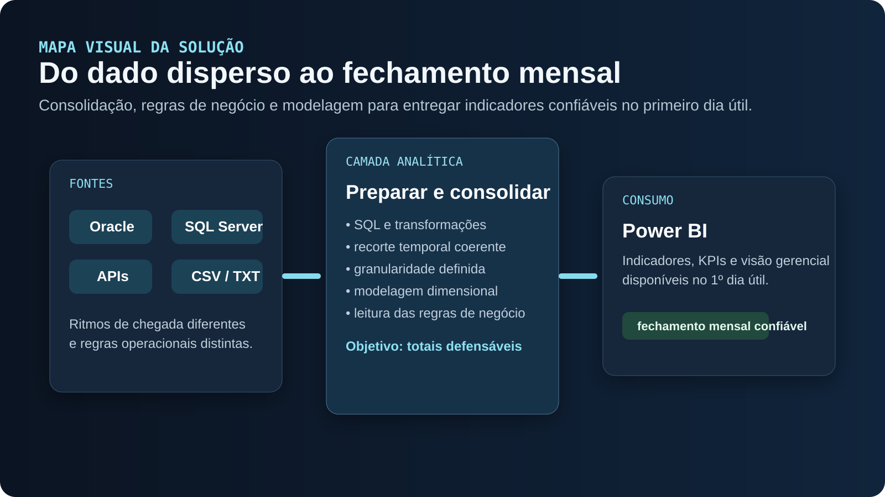

01 / PROBLEMA
Problema
O fechamento mensal reunia dados de Oracle, SQL Server, APIs e arquivos CSV/TXT. As fontes chegavam em ritmos diferentes, enquanto o resultado precisava estar disponível para apresentação no primeiro dia útil do mês seguinte.
02 / PREPARAÇÃO
Preparação
Consultas e transformações SQL consolidavam informações operacionais e financeiras. A camada analítica organizava os dados para consumo no Power BI, com modelagem dimensional e leitura das regras de negócio.
03 / GRANULARIDADE E PERÍODO
Granularidade e período
Uma tabela fato precisa ter granularidade definida; dimensões dão contexto para cortes por período e área. O recorte temporal da extração e as regras de transformação tinham de ser coerentes para que os totais apresentados fossem defensáveis.
04 / ENTREGA
Entrega
O trabalho ligava preparação técnica e apresentação gerencial. O material não publica tabelas internas, indicadores quantitativos nem ganhos medidos; o caso descreve as responsabilidades e decisões do fluxo.

Veja arquitetura, implementação, decisões, trade-offs, confiabilidade, observabilidade e alternativas deste caso.